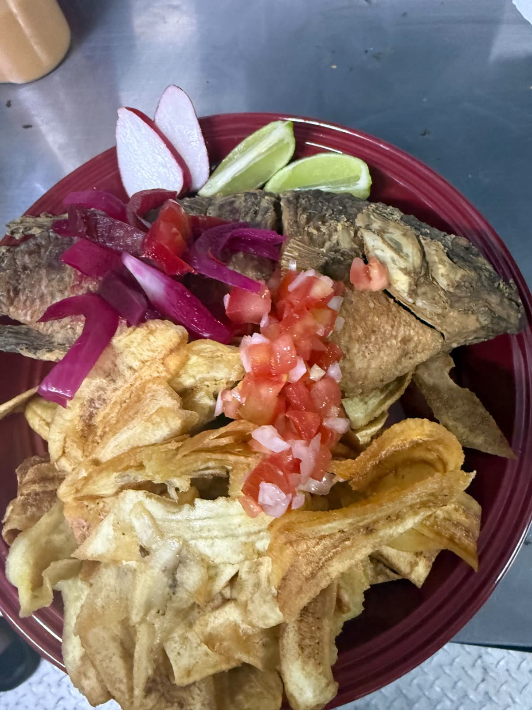

Pollo frito y pescado entero sobre tajadas de plátano verde, cocinados el mismo día en Owings Mills, Maryland.
Llamar para pedir Ver los platosPollo frito, dorado y crujiente, sobre tajadas de plátano verde, con chismol de tomate y cebolla y aderezo rosado por encima.
Pescado entero, frito hasta quedar crujiente, con tajadas, encurtido de cebolla morada, chismol, limón y rábano.
Como se come en la calle en Honduras: pollo frito sobre tajadas, con repollo, chismol, salsa roja y aderezo, en plato para llevar.
Precios y lo que hay hoy: 443-929-5727 o 443-468-2130.
Siempre he tenido la convicción y la visión de emprender.
Desde que salí de Honduras he tenido buenos mentores, y hoy me siento preparado para este reto: un proyecto con una gran visión a futuro.
Aprovechamos los recursos primarios con un concepto sencillo: ofrecer productos de alta calidad, siempre frescos del día.
Y siempre ayudando a la comunidad, convencido de que solo el pueblo salva al pueblo.
El fundadorOur Daily Bread, Owings Mills, Maryland
Plátano verde, pescado entero, pollo, tomate y cebolla: los recursos primarios de la cocina hondureña, preparados el mismo día en que se sirven.

Cocinado hoydel día